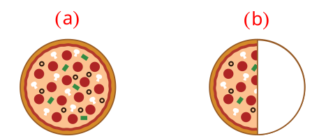
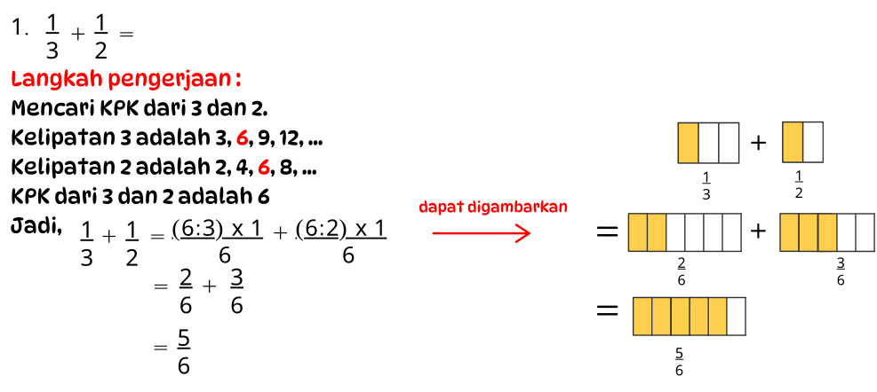
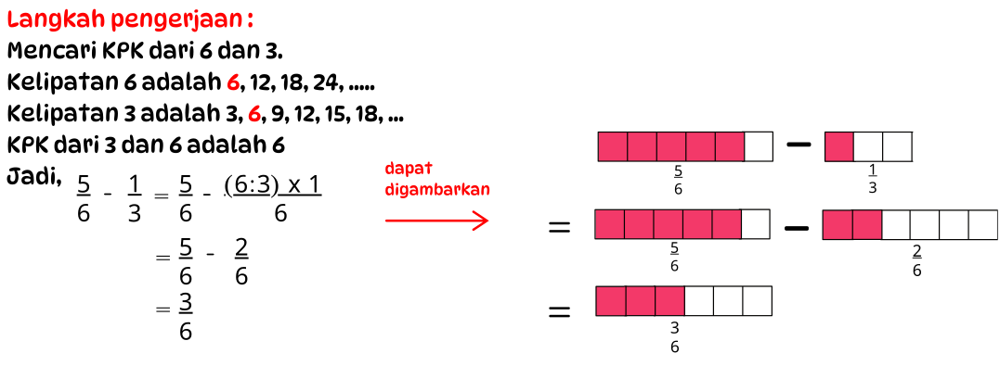

APA ITU
PECAHAN?

Pecahan
Pecahan dapat diartikan sebagai bagian dari sesuatu yang
utuh. Sebuah
pecahan mempunyai 2 bagian yaitu pembilang dan penyebut.
Dapat dituliskan dalam bentuk  ,
dengan (a) disebut
sebagai pembilang yaitu menunjukkan berapa banyak bagian yang diambil dari jumlah
keseluruhan dan (b) sebagai penyebut yaitu jumlah bagian dari keseluruhan.
,
dengan (a) disebut
sebagai pembilang yaitu menunjukkan berapa banyak bagian yang diambil dari jumlah
keseluruhan dan (b) sebagai penyebut yaitu jumlah bagian dari keseluruhan.
,
dengan (a) disebut
sebagai pembilang yaitu menunjukkan berapa banyak bagian yang diambil dari jumlah
keseluruhan dan (b) sebagai penyebut yaitu jumlah bagian dari keseluruhan.
Pecahan
Ilustrasi:
Pecahan biasa dapat digunakan untuk menyatakan bagian dari keseluruhan (1 utuh). Beberapa contoh kehidupan sehari-hari yang menggambarkan tentang pecahan.
Pecahan biasa dapat digunakan untuk menyatakan bagian dari keseluruhan (1 utuh). Beberapa contoh kehidupan sehari-hari yang menggambarkan tentang pecahan.

Ibu memiliki memiliki 1 loyang pizza utuh yang
terlihat pada
gambar (a), kemudian ibu memotong pizza menjadi 2 bagian yang sama terlihat pada gambar
(b), kemudian Yohanna mengambil 1 bagian dan memakannya terlihat pada gambar (c).
Nah, 1 bagian pizza dari keseluruhan jumlah pizza, yaitu 2. Jika dinyatakan dalam bentuk pecahan, dituliskan .
.
Nah, 1 bagian pizza dari keseluruhan jumlah pizza, yaitu 2. Jika dinyatakan dalam bentuk pecahan, dituliskan
.
Pecahan
Tebaklah pecahan pada gambar berikut!


Penjumlahan Pecahan Sederhana
- Penjumlahan pecahan dengan penyebut sama
Artinya menambahkan angka pembilang saja, tanpa menambah bilangan penyebut. Jadi, bilangan yang berubah pada hasil akhirnya hanyalah angka pembilang

Penjumlahan Pecahan Sederhana
- Penjumlahan pecahan dengan penyebut berbeda
Artinya proses menjumlahkan dua pecahan yang memiliki penyebut yang tidak sama. Untuk melakukan penjumlahan pecahan dengan penyebut yang berbeda, kita perlu menyamakan penyebut terlebih dahulu, kemudian baru menjumlahkan pembilangnya. Ubah penyebut setiap pecahan dengan menggunakan Kelipatan Persekutuan Terkecil (KPK).
Contoh:

Penjumlahan Pecahan Sederhana
Contoh :

Pengurangan Pecahan Sederhana
- Pengurangan pecahan dengan penyebut sama
Artinya pengurangan ini memiliki bilangan yang sama di bagian bawahnya. Untuk menyelesaikan operasi ini, cukup kurangi pembilangnya tanpa harus mengubah penyebutnya.
Contoh:

Pengurangan Pecahan Sederhana
- Pengurangan pecahan dengan penyebut berbeda
Artinya pengurangan pecahan dengan penyebut yang berbeda adalah proses mengurangi dua pecahan yang memiliki penyebut yang berbeda. Sama seperti penjumlahan pecahan dengan penyebut yang berbeda, kita perlu menyamakan penyebut terlebih dahulu sebelum melakukan pengurangan.
Contoh:

Pengurangan Pecahan Sederhana
Contoh :

Perbedaan Penjumlahan & Pengurangan Pecahan
Penjumlahan dan pengurangan pecahan memiliki prinsip dasar
yang serupa,
namun ada perbedaan penting dalam cara melakukannya yaitu:
-
Penjumlahan: Penjumlahan pecahan cenderung menghasilkan jumlah yang lebih besar karena pembilangnya ditambah setelah penyebut disamakan.
-
Pengurangan: Pengurangan pecahan bisa memberi hasil lebih keci dikarenakan mengurangi pembilang setelah menyamakan penyebut.
Soal Cerita Pecahan


Sumber Materi
-
Tim Gakko Tosho. (2021). Buku panduan guru matematika untuk sekolah dasar vol 2 kelas V SD. Kemendikbudristek.
-
Fitrianawati, M., Surtiani, I., Istiandaru, A. (2O22). Matematika SD/MI kelas V. Kemdikbudristek.